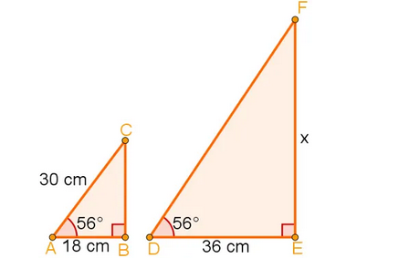
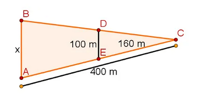
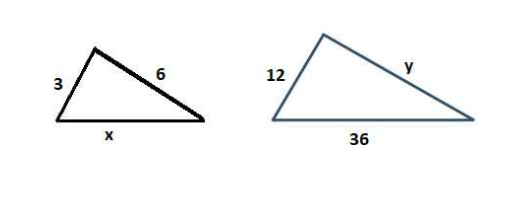
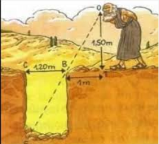
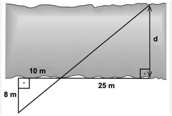

Qual o valor de x nos triângulos a seguir e Por que?

Primeiro caso de semelhança todos os angulos são iguais
Qual a medida de x?
 Segundo caso compartilham um angulo e tem um lado paralelo
Definição:Dois triângulos são semelhantes quando possuem ângulos correspondentes de mesma medida e lados homólogos (correspondentes) proporcionais.
Isso significa que os triângulos têm a mesma forma, mas tamanhos diferentes, podendo um ser uma ampliação ou redução do outro.
Determine x e y nos seguintes pares de triângulos semelhantes:

Segundo a imagem a seguir qual a fundura do buraco?

Para medir a largura aproximada de um rio, utilizou-se o esquema ao lado.
De acordo com a figura, pode-se de dizer que o valor de d é:

Queremos calcular a altura da sua caixa d’água. Para isso, durante o dia, ela observou a sombra de um pedaço de madeira reto ao
lado da caixa d’água e mediu o comprimento da sombra, que era de 0,6 metro. Já a sombra da caixa d’água era de 3,40 metros, conforme a imagem a seguir: